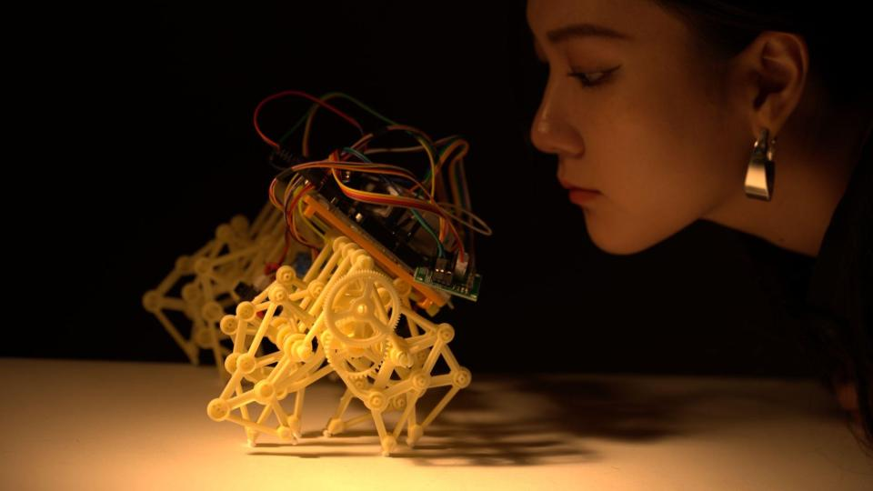
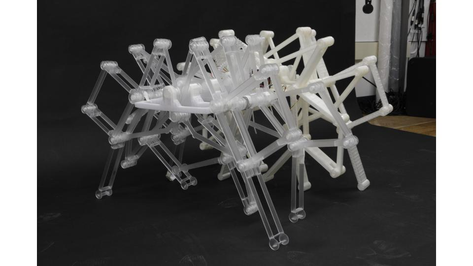
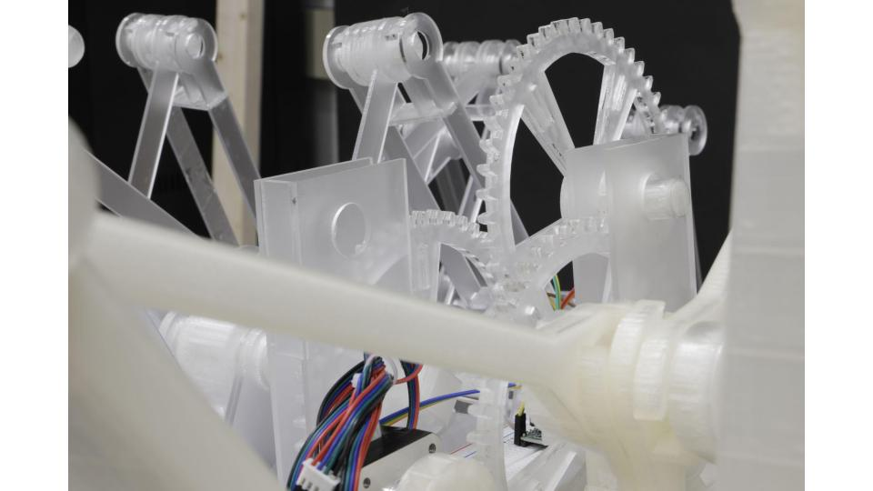

- Boundareis
Boundareis (2022)- Materials: IR sensor, Arudino, and batteries
- This work is about personal, social, cultural boundaries. We always have invisible and visible boundaries that hard to break.
- Despite being invisible, boundaries can be discerned through the experience of reaching a certain distance beyond which we cannot approach any further.
Similarly, if we are too far away from the distance, a person or a relationship that creates distance started to chase us back.
Thus highlighting the existence of these -

- 
- 
-

- 
-